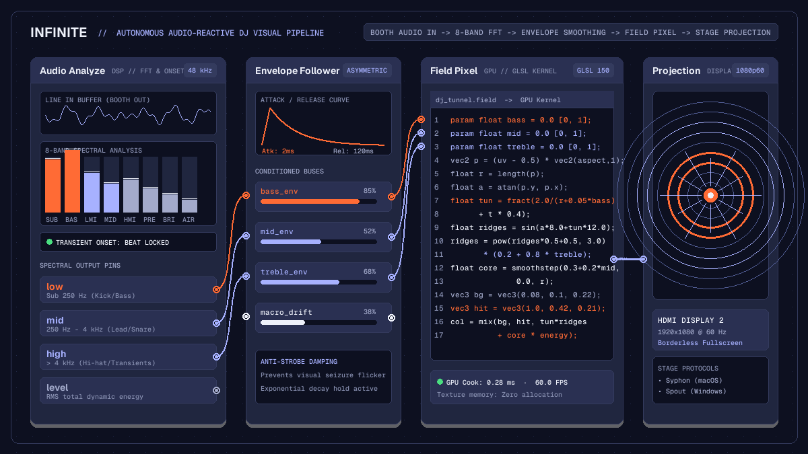

Creative
Automatic visuals for DJ sets: hands-free live visuals in Infinite
Generate hands-free, audio-reactive visuals for DJ sets in Infinite using live audio analysis, frequency-split modulation, and hardware projection.

on this page
- Hardware setup and audio capture
- Frequency decomposition and onset detection
- Smoothing transients with envelope followers
- Designing generative visuals with Field Pixel
- Adding motion trails and temporal depth
- Evolving scenes across an hour-long set
- Routing low-latency video to stage projectors
- Performance checklist and live limits

Performing an electronic music set demands constant attention. Selecting tracks, adjusting equalization, matching phrasing, and monitoring booth levels leave no spare hands for triggering video clips or operating complex VJ software. Many performers resort to running pre-rendered video loops on a thumb drive. While convenient, looping video files quickly grow repetitive and fail to react when a track drops into an extended breakdown or changes tempo.
Creating automatic visuals for DJ sets solves this disconnection. By running an autonomous visual patch that listens to the master output of your DJ mixer, extracts rhythmic and spectral features in real time, and synthesises generative graphics on the GPU, you achieve synchronised club visuals that adapt to every transition without manual intervention.
In Infinite, audio processing and real-time graphics run inside the same unified canvas. Rather than stringing together separate audio hosts and VJ applications over networked video protocols with variable latency, Infinite shares memory between its low-latency audio engine and GPU rendering pipeline. This guide explains how to construct a robust, hands-free audiovisual patch for live DJ performance, from signal conditioning and frequency decomposition to generative shader synthesis and projector output.
Hardware setup and audio capture
The foundation of responsive generative visuals is a clean, low-latency audio feed from your performance hardware. Relying on an ambient room microphone produces muddy transients and room reverberation that blur beat detection.
To set up a reliable signal path:
- Connect the secondary master output, booth monitor output, or dedicated record output from your DJ mixer or club interface into a stereo line input on your audio interface.
- In Infinite, open audio settings and select your input device. Configure the hardware buffer size to 128 or 256 samples at 44.1 kHz or 48 kHz. At 48 kHz, a 128-sample buffer introduces under three milliseconds of capture latency, ensuring visual hits land on the exact transient of each kick drum.
- Add an
Audio Innode to the canvas. Verify that input gain levels peak between -6 dB and -3 dB during loud sections. Consistent headroom prevents digital clipping, which can distort high-frequency energy measurements.
Note that in Infinite, hardware audio capture requires running the application with its user interface. The headless command-line interface deliberately refuses microphone and live audio input patches with exit code 4 to prevent background processes from holding hardware audio device locks.
Frequency decomposition and onset detection
Raw audio waveforms fluctuate too rapidly to be cabled directly to visual parameters. A direct connection causes high-frequency flickering that strains the eyes and lacks rhythmic clarity. Instead, incoming sound must be decomposed into musically meaningful frequency bands and transient events.
Wire the stereo outputs of Audio In into an Audio Analyze node. The Audio Analyze node inspects 48 kHz audio buffers and separates the incoming spectrum into distinct frequency domains:
low: Energy below 250 Hz, isolating kick drums and sub-bass foundation.mid: Energy between 250 Hz and 4 kHz, capturing vocal hooks, snare bodies, and synth leads.high: Energy above 4 kHz, tracking hi-hats, cymbals, percussion sizzle, and vocal sibilance.level: The instantaneous root-mean-square amplitude across the entire audible spectrum.
In addition to continuous frequency energy, Audio Analyze performs onset detection. By measuring rapid increases in spectral flux, the node outputs discrete trigger impulses whenever an acoustic transient occurs. These triggers allow your visual patch to register sudden tempo changes, snare hits, or unexpected drops.
Smoothing transients with envelope followers
While frequency splitting separates bass from treble, raw spectral energy still jumps abruptly from buffer to buffer. To turn these values into fluid, organic motion, route each frequency pin through signal conditioning before connecting them to graphics nodes.
The ideal tool for this smoothing is an Envelope Follower or an inline smoothing formula in the audio-reactive GLSL shader pipeline. An envelope follower applies asymmetrical attack and release times to incoming modulation values:
- Fast attack (1 to 5 milliseconds): Allows visual elements to react immediately to the initial strike of a kick drum or crash cymbal, preserving rhythmic punch.
- Controlled release (80 to 250 milliseconds): Prevents the parameter from dropping to zero between musical beats. The value decays exponentially, producing smooth physical recoil rather than jarring digital stepped changes.
For sub-bass frequencies, set a release time around 120 milliseconds. This timing allows geometric pulses to breathe in sync with typical 120 to 135 BPM dance music tempos. For high frequencies, a shorter release of 40 milliseconds keeps hi-hat shimmers crisp and articulate.
Designing generative visuals with Field Pixel
With smoothed frequency bands available as modulation sources, add a Field Pixel node to generate real-time visuals directly on the GPU. The Field Pixel node compiles mathematical Field expressions into native GLSL fragment programs.
Declare input parameters at the top of your kernel using the param keyword. Each declared parameter automatically exposes an input pin on the node body:
param float bass = 0.0 [0.0, 1.0];
param float mid = 0.0 [0.0, 1.0];
param float treble = 0.0 [0.0, 1.0];
param float energy = 0.0 [0.0, 1.0];
param float speed = 0.5 [0.0, 2.0];Inside the kernel, map these parameters to visual geometry. A reliable starting point for club visuals is a polar tunnel or radial raymarcher. Normalized coordinates uv are centred and corrected for aspect ratio:
vec2 p = (uv - 0.5) * vec2(aspect, 1.0);
float r = length(p);
float a = atan(p.y, p.x);
// Bass drives radial deformation and pulse expansion
float tunnel = fract(2.0 / (r + 0.05 * bass) + t * speed);
// Treble modulates high-frequency geometric ridges
float ridges = sin(a * 8.0 + sin(tunnel * 12.0)) * 0.5 + 0.5;
ridges = pow(ridges, 3.0) * (0.2 + 0.8 * treble);
// Mid frequencies control luminous glow and core radius
float core = smoothstep(0.3 + 0.2 * mid, 0.0, r);
vec3 base_col = vec3(0.1, 0.15, 0.35);
vec3 pulse_col = vec3(1.0, 0.42, 0.21);
col = mix(base_col, pulse_col, tunnel * ridges + core * energy);Because the shader recalculates every pixel in parallel on the GPU, complex mathematical forms render at a stable 60 frames per second without burdening the CPU threads responsible for audio analysis.
Adding motion trails and temporal depth
A common issue with procedural visuals in live venues is visual emptiness during breakdown sections. When the kick drum cuts out, a purely reactive shader may collapse into a flat, motionless background.
To maintain visual interest across quiet passages, pipe the output of your Field Pixel node into a Feedback node paired with a Blend node:
- Connect the shader output to the primary input of
Blend. - Connect the output of
Blendinto aFeedbacknode. - Cable the output of
Feedbackthrough a subtle transform (such as a slight zoom of 1.01 or a minute rotation of 0.2 degrees) and route it back into the secondary input ofBlend. - Set the blend mode to Screen or Lighten, with opacity set between 0.85 and 0.92.
This feedback loop stores previous frames in texture memory and decays them over time. When intense drops occur, bright bursts leave radiant trails that echo outwards. When the music strips down to an ambient synth pad, the feedback buffer gently circulates the remaining visual energy, creating atmospheric smoke and fluid drift until the rhythm returns.
Evolving scenes across an hour-long set
To prevent audience fatigue during a sixty or ninety-minute performance, visuals must evolve over macro timescales. An audience will notice if a single shader pattern loops without variation for an entire hour.
You can introduce macro evolution autonomously using slow modulators:
- Slow LFOs: Add an
LFOnode set to a Sine or Triangle shape at an ultra-low frequency, such as 0.005 Hz (one cycle every three minutes). Cable this LFO to camera rotation, tunnel depth, or geometric twist. The audience perceives a constantly shifting environment without sudden disjointed cuts. - Dynamic colour ramps: Route a slow noise signal from a
Noisenode into aColor Rampnode. Instead of fixed RGB values, the colour palette gradually glides from deep midnight blues and indigos into warm ember and amber hues over ten to fifteen minutes. - Breakdown detectors: Use a comparison node to monitor overall
level. If overall audio amplitude drops below a threshold for more than four seconds, automatically trigger a slow fade into an expansive, floating particle field. When the onset detector registers a sudden peak inlowenergy, switch back to high-impact geometric pulses.
You can explore pre-configured generative patches and modulation recipes in the Infinite node library.
Routing low-latency video to stage projectors
Once your patch is generating responsive visuals, route the video stream to the venue display system:
- Direct projector output: Connect an HDMI, DisplayPort, or USB-C cable to the club projector or LED processor. In Infinite, add a
Projectionnode. In the node inspector, select the external display and enable full-screen presentation. Infinite renders borderless output to the selected screen while keeping the node canvas accessible on your laptop display. - Inter-application video sharing: If the venue uses visual mapping software such as Resolume Arena or broadcast tools like OBS, use Infinite's native video sharing nodes. On macOS, add a
Syphon Outnode; on Windows, add aSpout Outnode; for networked rigs, useNDI Out. These protocols share GPU texture handles directly across memory without copying pixels back to system RAM, maintaining full frame rates with zero added latency.
Performance checklist and live limits
When preparing an autonomous visual rig for a live performance, follow these stability guidelines:
- Cap display refresh rates: Enable vertical synchronisation (VSync) or set a maximum frame limit of 60 frames per second in application preferences. Rendering at uncapped frame rates (such as 240 fps) heats your laptop graphics chip unnecessarily, increasing the risk of thermal throttling during long sets.
- Audio buffer safety: Keep your audio buffer at 128 or 256 samples. Avoid setting buffer sizes below 64 samples unless using a dedicated audio interface with robust proprietary drivers. A buffer underrun in the audio thread will momentarily disrupt feature extraction.
- Prevent operating system sleep: Ensure system energy saver settings prevent screen sleeping and disk spindown when the laptop lid is closed or unattended.
- Clean line inputs: Always request a dedicated booth or record output from the house sound technician rather than tapping an auxiliary headphone jack with unstable volume controls.
By combining low-latency audio capture, frequency-split envelope followers, and GPU fragment shaders, you can build an expressive, automatic visual accompaniment that elevates your live DJ sets while keeping your hands entirely focused on the music.